글로 읽는 먹방 - 잭 오브리의 커피
게시: 2020-11-12T06:30:23+09:00
초심을 살려, 나폴레옹 전쟁 기간 중 영국 해군 함장과 그 친구인 군의관의 모험을 그린 소설인 Jack Aubrey & Maturin 시리즈 중 커피와 관련된 부분을 발췌해서 번역해 보았습니다. 일종의 문장으로 보는 먹방이지요. 저도 이 소설을 읽고 난 뒤에 '커피는 hot & strong'이라는 믿음을 가지게 되었습니다.
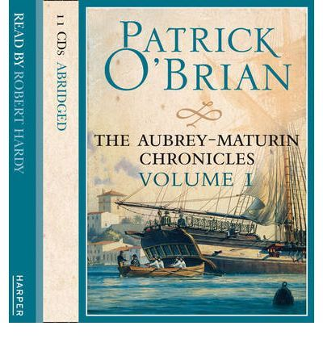
Post Captain 1) 멜베리(Melbury) 장(莊)에서의 아침식사도 쾌활한 편이었으나, 약간 다른 방향으로 그런 편이었다. 칙칙한 마호가니와 터키식 카펫, 웅장한 의자들, 커피와 베이컨, 담배와 땀에 젖은 남자들의 냄새가 풍기고 있었다. 그들은 새벽부터 낚시질을 갔다가 이제 막 아침식사를 절반 정도 끝낸 상태였다. 그들 앞에 대령된 아침식사는 넓고 하얀 식탁보를 가득 매우고 있었다. 신선로들(chafing dishes)과 커피 포트들, 토스트 걸이들(toast-racks), 베스트팔렌식 햄(Westphalian ham), 아직 건드리지도 않은 굳은 파이(raised pie)에, 아침에 그들이 잡아온 송어가 있었다. "이건 다리 아래에서 낚은 것이라네." 잭이 말했다. "편지입니다, 함장님." 그의 급사인 프리저브드 킬릭이 말했다. "잭슨으로부터 온 거네." 잭이 말했다. "그리고 다른 것은 소송대리인으로부터 온 것이군. 실례하겠네, 스티븐. 무슨 일인지 한번 봐야겠어. 무슨 핑계일까." "이런 맙소사." 잠시 뒤 잭은 탄식을 내뱉었다. "이럴 수는 없어."
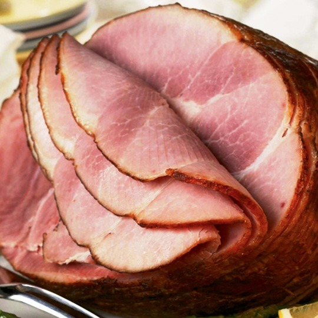
(베스트팔렌식 햄이란, 도토리만 먹여 키운 돼지다리를 건조 숙성 시킨 뒤 훈제한 것입니다.)
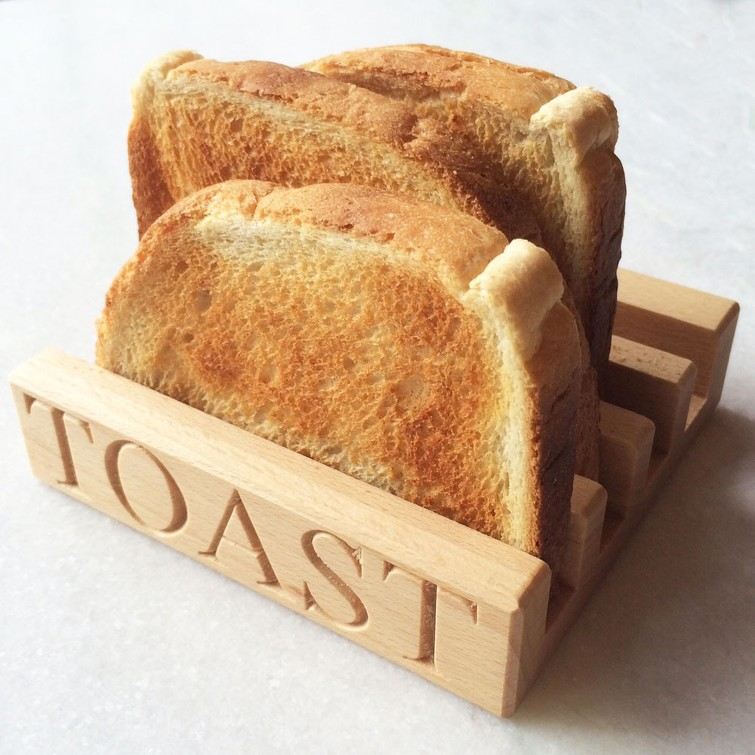
(Toast rack이라는 물건이 있다는 것도 이 소설 읽고 처음 알았습니다.) 2) (잭과 스티븐은 스페인 군함의 포로가 되었습니다.) 스페인 함장은 그의 소원대로 그날 하루 푹 쉴 수 있었다. 그 다음날도 평안했다. 하지만 그가 정오의 위치 측정(450 23' N., 10° 30' W.)을 마치고 그의 포로들에게 아침식사로는 스페인식 빵과 진짜 커피를 대접하겠다고 약속하고 난 뒤, 풍상(windward) 쪽에 범선이 보인다는 견시병의 외침 소리가 들려왔다. 점차 그 하얀 점은 작은 브릭(brig)함인 것으로 드러났고, 그 브릭함은 분명히 추격을 해오고 있엇다. 3) "이 소란 소리는 뭐야 ?" "죄송합니다, 함장님." 해병대원이 대답했다. "함장님의 급사와 장교 식당의 급사가 서로 커피 포트를 쓰겠다고 싸우고 있습니다." "그 자식들 눈알을 그냥 확...(God damn their eyes)" 잭이 외쳤다. "그 녀석들 등가죽을 벗겨 놓겠어 - 셔츠를 피로 흠뻑 적셔주지. 더 이상 저 짓거리를 못 하게 해주겠어. 고참 수병들도 말이야. 죽일 놈들(rot them). 파커 부장, 이 슬룹(sloop)함에 질서가 좀 있어야겠네."
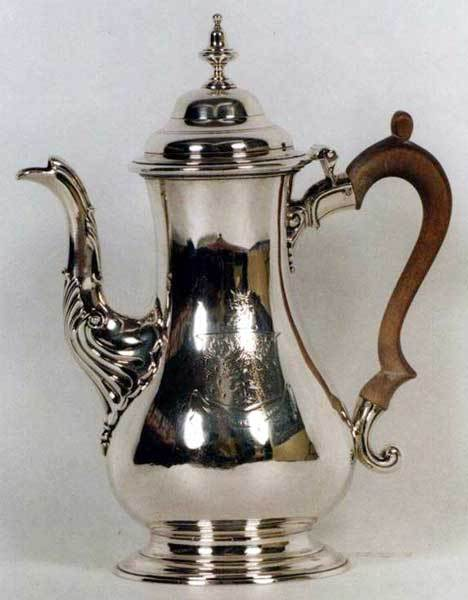
(당시 커피 포트는 은, 놋쇠, 도자기 등 다양한 재료로 만들어졌습니다.) 4) "제가 그랬나요 ? 글쎄요, 뭐 해가 될 건 없겠지요. (처방한 대로) 포터 맥주를 드십니까 ?" "거의 종교적 수준으로 챙겨 마셔요. 은으로 된 맥주잔에요. 이젠 거의 좋아서 마실 정도지요. 뭘 좀 드릴까요 ? 제독님은 이 시간 즈음에는 항상 그록(grog, 럼에 물을 섞은 것)을 한잔 드세요. 플리머스에서는 오래 머무시나요 ? 그러셨으면 좋겠어요." "커피 한잔 주신다면 정말 고맙겠습니다. 엑제터에 머물렀는데, 거기서는 정말 끔찍한 커피(the vilest brew)를 주더군요... 아닙니다. 저는 이동 중이랍니다. 밀물이 되면 떠납니다." 5) 아침식사는 다소 실망스러운 편이었다. 해먼드 함장은 항상 코코아를 마셨는데, 원래는 부하들에게도 그러기를 권장하기 위해서 마시기 시작했다가 나중에는 정말 좋아하게 된 것이었다. 그러나 잭과 스티븐은 둘다 뜨겁고 진하게 끓인 커피를 한 포트 마시기 전에는 제대로 사람 구실을 못 하는 편이었다. "킬릭", 잭이 말했다. "이 돼지 씻은 물을 뱃전 너머로 던져 버리고 당장 커피 가져와." "익 죄송합니다, 함장님," 킬릭은 심각한 얼굴로 대답했다. "제가 커피콩을 깜빡 했습니다. 게다가 주방장에게도 커피가 없네요." "그럼 당장 사무장의 급사나 장교 식당(gun-room) 요리사, 환자실, 어디든 쫓아가서 얻어와. 그러지 못하면 니 이름은 더 이상 프리저브드(Preserved, 보존되었다는 뜻)가 아닐거야, 내 장담하지. 당장 움직여. 저 빌어먹을 놈이 우리 커피를 잊어먹어 ?" 그는 분을 못 삭이며 스티븐에게 말했다. ...중략... "죄송하지만 함장님, 이 배에는 정말 커피라고는 한방울도 없네요. 오 신이시여." 킬릭이 말했다. "스티븐, 난 한바퀴 돌아보겠네." 잭은 파도의 출렁임에 교묘하게 맞춘 몸동작으로 테이블에서 일어나 구부정한 자세로 문을 잽싸게 빠져나갔다. "대체 이 배를 왜 최정예 프리깃함(crack frigate)이라고 부르는지 모르겠군." 그는 침실칸에서 물을 한잔 마시며 말했다. "도통 납득이 안 가. 260명의 수병들이 모인 곳에 커피가 한방울도 없다니." 2시간 뒤, 항구 사령관이 라이블리(Lively) 호에게 출항하라는 신호를 보내오자 그 이유를 분명히 알 수 있었다.
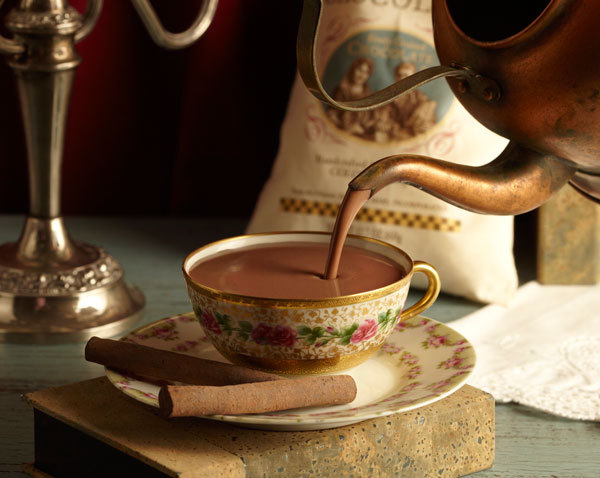
(아침에 뜨거운 초콜릿을 마시는 것이 뭐 나쁜가요 ?) 6) "갈 때 자네에게 좀 괜찮은 커피를 사달라고 부탁 좀 해야겠네. 킬릭은 볼 줄을 몰라. 그 친구는 밀수꾼 출신답게 와인은 좋은 거 고를 줄 알지만, 커피는 뭐가 좋은지 모르더라고." 7) "아직은 행동할 시간이 있습니다. 멜빌 경에게 즉각 알려야겠군요. 틀림없이 멜빌 경이 당신을 뵙고 싶어 할 겁니다. 피트 수상도 즉각 알아야 합니다. 아, 난 정말 윈저 궁 방문은 싫은데 - 잠깐 실례하겠습니다." 그는 쏜살 같이 방을 빠져 나갔다. 스티븐은 즉각 조셉 경이 건드리지도 않고 남겨둔 커피잔을 들어 자신의 잔에 부었다. 조셉 경이 풀이 죽어 돌아왔을 때 스티븐은 그걸 마시고 있는 중이었다. "멜빌 경은 그 망할 놈의 청문회에 출석 중입니다. 적어도 몇 시간은 자리에 없을 텐데, 지금은 1분 1분이 중요하거든요. 그래도 쪽지를 보냈습니다. 지금 당장 행동해야 합니다..." ... "30분 정도면 알게 될 겁니다. 머투어린 박사, 커피를 좀더 내오라고 종을 울리겠습니다. 이상하게 제 커피가 양이 줄어들었네요."
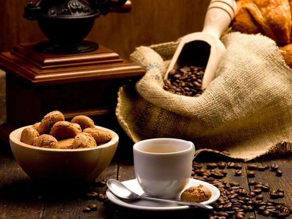
8) 아침식사는 허접한 것이었다. 임시 제독(Commodore)이 머투어린 박사를 소환하는 신호를 보내왔던 것이다. 그를 태운 커터 보트가 갑판에서 바다로 내려지는 동안 그는 한 손에는 커피잔을, 다른 손에는 버터 바른 빵을 들고 있었다. 갑자기 양쪽 함대의 사이가 매우 좁혀져 있었다. 스페인 함대는 이미 전투 대형을 짜고 풍향이 1포인트 풀린 상태가 되도록 우현 방향으로 틀고 있었다. 양측의 사이는 매우 가까와 스티븐의 눈에 스페인 전함의 포문이 보일 정도였다. 하나하나가 다 활짝 열려 있었다. 9) (치열한 전투 이후 뒷정리 때문에 바쁜 잭 오브리 대신, 항복한 스페인 프리깃함의 함장을 스티븐이 만납니다.) 스페인 함장은 자리에서 일어나 멀리서 고개를 숙여 인사를 했다. 스티븐은 앞으로 나서 프랑스어로 자신을 소개했다. 그는 오브리 함장이 돈 이그나시오 함장에게 약간의 다과라도 대접하고 싶어할 것이라고 말했다. 어떤 것을 드릴까요 ? 초콜릿, 커피, 와인 ? "젠장, 스페인 함장을 완전히 까맣게 잊고 있었지 뭔가." 처참한 상태로 박살이 난 선실에 잭이 나타나며 말했다. "스티븐, 이 분은 클라라 호의 함장일세. Monsieur, j'ai l'honneur de introduire une amie, le Dr Maturin: Dr Maturin, l'espagnol capitaine, don Garcio. (므슈, 여기 친구를 소개시켜 드리게 되어 영광입니다. 닥터 머투어린입니다. 닥터 머투어린, 스페인 함장 돈 가르시오라네.) 이 분께 뭔가 대접하고 싶다고 설명 좀 해주게 - vino, chocolato, aguardiente? (와인, 초콜릿, 증류주 ?)" - 역주: 작가 패트릭 오브라이언은 여기서 일부러 잭이 문법적으로 틀린 불어를 쓰게 하고 있습니다. 이 시리즈물 내내 주인공 잭 오브리는 스페인어와 프랑스어가 뒤섞이고 문법적으로 잘못된 문장을 부끄러운 줄 모르고 마구 씁니다. 가령 여기서는 남자인 머투어린을 une amie라고 친구의 여성형으로 소개하고 있습니다. 스티븐은 이 모든 것을 몹시 창피하게 생각합니다만 차마 내색은 못합니다. vino는 스페인어와 이탈리아어로 와인이고, chocolato는 국적 불명의 단어인데, 아마 이탈리아어의 cioccolato를 잘못 쓴 것 같고, aguardiente는 스페인어입니다. 어쨌거나 뜻이 통하면 되는 거지요.
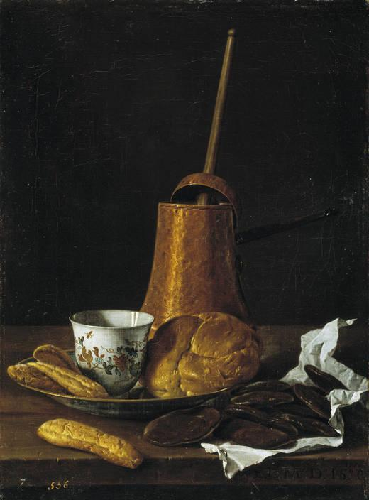
(그 시절 초컬릿은 먹는 것이 아니라 마시는 것이었지요.) HMS Surprise 10) (잭이 자신의 부인인 소피에게 편지를 쓰며 생각에 잠깁니다.) 사랑하는 소피에게 있어 해군 생활은 - 꼭 같다고 할 수는 없지만 - 끝날 줄 모르는 소풍과 크게 다르다고 할 수도 없는 것이었다. 물론 가끔씩 (커피나 신선한 우유, 채소의 부족 같은) 어려움이 생기기도 하고, 이따금 대포가 발사되기도 하고, 칼이 서로 맞부딪히는 일도 있지만, 진짜 사람들이 다치는 일은 없는 것이었다. 죽는 사람이 생기는 경우에도, 보이지 않는 상처로 그냥 순식간에 죽었다. 그런 사람들은 그저 사상자 명단의 숫자일 뿐이었다. 그는 펜에 잉크를 묻힌 뒤 다시 써나갔다. 11) 잭은 뭔가 분위기를 부드럽게 만들 말을 하려고 했는데, 그 순간 킬릭이 다시 나타났다. "커피가 준비되었습니다, 함장님." 그는 뭔가 심통이 난 목소리로 말했다. 잭이 서둘러 그의 선실로 들어가면서 킬릭의 잔소리를 들어야 했다. '돌처럼 차가와졌어 이젠 - 제6 타종 때부터 식탁 위에 올려져 있었거든 - 함장님에게 두번 세번 이야기했지 - 저거 만드느라고 고생했는데, 그냥 식어버리게 내버려둔거야' 이 말들은 문 앞에 보초를 서고 있는 해병에게 하는 것 같았는데, 이 해병은 이 불손한 말들을 못 들은 척 또는 이 대화에 끼어들지 않으려 충격 받은 공포의 표정을 지었다. 이 해병의 표정은 잭이 이 배에서 차지하지 하는 외경에 가까운 존경심에 비례하는 공포를 보여주었다. 사실 커피는 아직 뜨거웠고, 입을 델 지경이었다. "아주 훌륭한 커피야, 킬릭." 그는 한 포트의 커피를 비운 뒤 말했다. 퉁명스러운 궁시렁 소리와 함께, 킬릭은 뒤를 돌아보지도 않고 말했다. "아마 한 포트 더 원하시겠지요, 함장님." 뜨겁고 진한 커피, 얼마나 잘 넘어가는지 ! 그의 멍하고 무기력한 두뇌에 기분 좋은 활기가 기어들어오는 것이 느껴졌다.
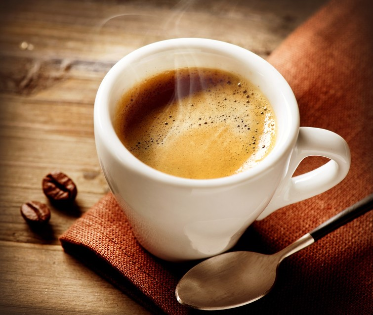
12) 그는 말했다. "장교 식당(gunroom)에 가기 전에 마데이라(Madeira) 와인 한잔씩 하는 것이 어떻겠나 ? 내가 알기로는 우리를 대접한다고 장교 식당에 딸린 돼지 중 어린 것을 잡았다더군. 돼지고기에는 마데이라가 아주 좋은 애피타이저지." 마데이라는 입맛을 돋운 뒤, 거기에 장교 식당에서 대접하는 버건디 와인을 곁들인 뒤에 돼지고기를 먹으니 확실히 아주 좋았다. 만약 그들의 체온이 정상보다 좀 낮았다면 더욱 좋았을 것이었다. '인간의 육체가 이런 과식을 얼마나 더 견딜 수 있을까, 두고 볼 일이야' 스티븐은 테이블을 둘러보며 생각했다. (역주: 스티븐은 영국 해군에서는 장교들이나 수병들이나 너무 많이 먹고 너무 많이 마신다고 평소 생각해왔습니다.) 그 자신은 이론적 그리고 개인적인 경험에 근거하여 마늘을 문지른 건빵을 먹고 있었고, 연하게 끓인, 식은 블랙 커피를 마셨다. 그러나 테이블을 둘러보니 장교들의 육체는 꽤 잘 버티고 있었다. 잭은 뿌리 채소와 함께 돼지고기를 2파운드나 먹은 뒤 엄청난 두께의 더프(duff) 푸딩을 한조각 먹은지라, 평소보다 조금 더 뇌졸증에 근접한 편이었다. 그러나 그 붉은 얼굴의 밝은 푸른 눈동자는 흐리멍텅해보이지 않아 당장 위험해보이지는 않았다. 이는 뚱뚱한 미스터 허비에게도 해당하는 말이었다. 그는 평소의 습관적 절제를 벗어나 먹고 마신 상태였는데, 그의 둥근 얼굴은 - 만약 태양이 흥에 겨워 윙크를 할 줄 안다고 가정하면 - 떠오르는 태양 같았다. 거기 모인 모든 얼굴들은 - 니콜만 빼고 - 모두 환한 빨간 색이었는데, 허비의 얼굴이 그 중에서 두드러졌다. 이 선임사관에게는 왠지 정이 가는 순박함이 있었다. 치열하게 경쟁하는 것도 없고, 잰 척 하는 것도 없고, 기분 상하게 할 행동이 전혀 없었다. 이런 사람이 함상 백병전에서는 어떻게 행동할까 ?
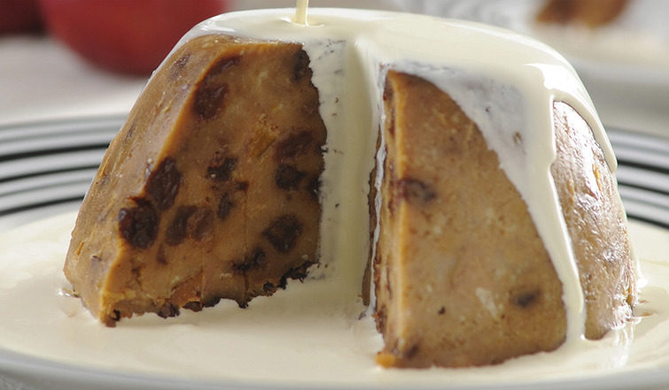
(플럼을 넣은 더프 푸딩입니다. 이건 삶아서 만드는 디저트이므로, 오븐이 없는 군함에서도 즐겨 만들어 먹을 수 있었습니다.) 13) "선원들에게 아침 식사 호각 신호를 보내게." 잭은 말했다. "그리고 미스터 처치, 킬릭에게 전해주겠나 ? 내 커피가 갑판에 15초 안에 도착하지 않을 경우 정오에 그 자식을 십자가형에 처할 거라고. 참 날씨 좋지 않나 ? 아 드디어 커피가 왔군 - 한잔 하겠나 ? 잠은 제대로 잤고 ? 하하, 잠을 잔다는 것은 참 좋은 일이야." The Mauritius Command 14) 일반적인 잡담을 좀 하고 나니 잭은 저녁을 아주 잘 먹고 노래를 부르며 집에 왔으며, 지금은 직접 커피콩을 갈고 있다는 것을 알 수 있었다. 소피는 말했다. "아, 스티븐, 우리 남편이 배를 얻을 수 있도록 당신이 도울 수만 있다면 얼마나 좋을까요. 그이는 여기서 정말 불행하게 지내거든요. 저 언덕에서 망원경으로 바다를 바라보며 몇 시간씩을 보낸답니다. 그걸 보면 마음이 찢어지는 것 같아요. 아주 짧은 항해라도 참 좋겠어요. 이제 곧 겨울이 되는데, 습기는 그이의 옛 부상에 아주 안 좋거든요. 아무 배라도 좋겠어요. 미스터 풀링즈(잭이 오래 전부터 데리고 있던 선임사관입니다)처럼요."
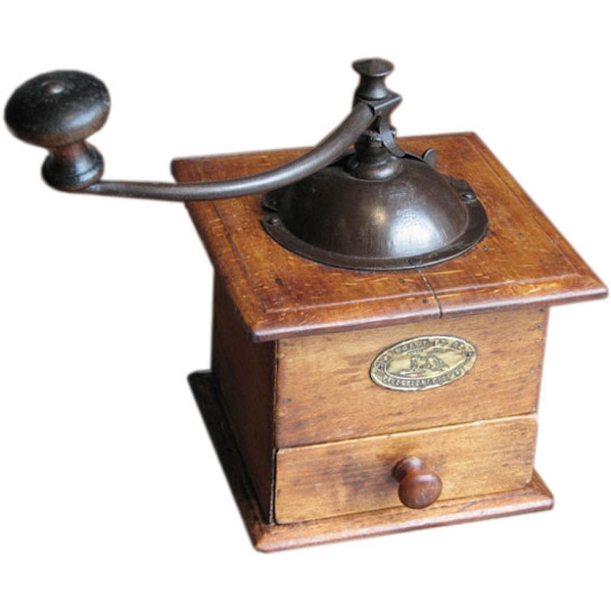
(수동식 커피 그라인더입니다. 저희 집에서도 이런 비슷한 것을 씁니다.) 15) 아침 식사가 응접실에 펼쳐졌고, 그들은 커피와 토스트, 그리고 나무 타는 연기의 기분 좋은 향기 속으로 걸어 들어갔다. 햄이 식탁 위에 떡 하니 놓여 있었고, 그 옆에는 하나하나의 크기가 피핀(pippin) 사과만한, 잭이 직접 키운 무들이 놓여 있었다. 그리고 달걀 한개가 놓여 있었다. "시골에서 살면 아주 좋은 점이 있다네." 그는 말했다. "채소를 정말 싱싱한 것으로 먹을 수 있지. 그리고 저거 우리 닭이 낳은 달걀이야, 스티븐. 맘껏 들게. 소피가 만든 크랩 사과 잼이 자네 옆에 있네. 저 망할 놈의 굴뚝 ! 바람이 남서풍 비슷하게 불 때는 연기가 빠지질 않아. 스티븐, 달걀 받게나." 16) 그의 급사는 커피 포트를 깨먹었고, 그의 프랑스인 요리사는 다른 전쟁 포로들과 합류하기 위해 브레토니에와 함께 뭍으로 가버렸다. 그러니 이제 아침식사에 브리오슈(brioche)를 먹기는 글렀다. 하지만 커피가 없다는 사실보다도 훨씬 더 심각한 일은 제독이 약속한 명령서가 아직도 오지 않았다는 것이었다.
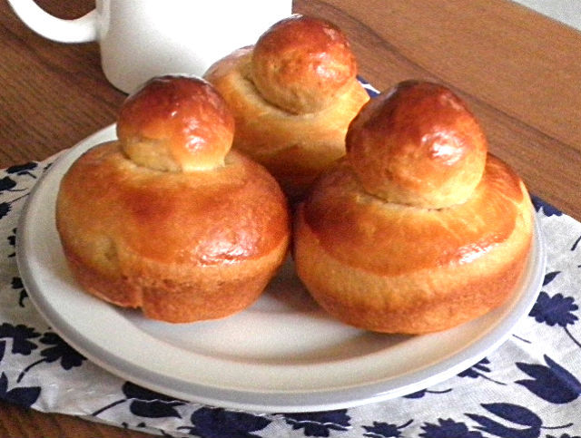
(브리오슈는 혁명의 빵이지요. "S’ils n’ont plus de pain, qu’ils mangent de la brioche") 17) 잭의 급사는 조심스럽게 옆에 다가와서는 '장교 식당의 커피 포트' 어쩌고를 속삭였다. 스티븐은 말했다. "아마 커피가 준비된 모양일세." 실제로 그랬다. 그걸 마시는 동안 신선한 크림과 베이컨, 달걀, 돼지고기 튀긴 것, 그리고 진짜 프랑스 쇼트 바스타드 빵 (French short bastards) 중 마지막으로 남은 것을 토스트한 것에 소피가 만들어준 오렌지 마멀레이드를 발라 먹으니 점점 너그러운 마음이 돌아오기 시작했다.
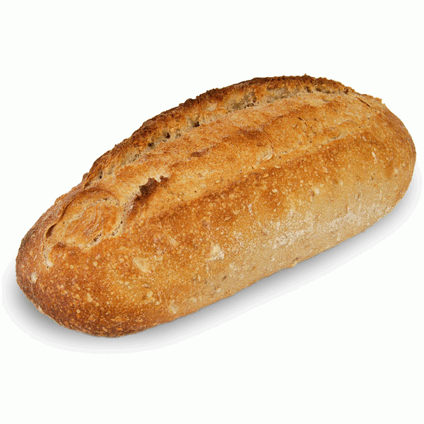
(French short bastard라는 단어는 원래 영어에서 널리 쓰이는 단어는 아닙니다. 이는 불어의 pain bâtard를 그대로 번역한 것인데, 당시 빵은 무게로 달아 파는 것이 보통이었는데, 이렇게 무게로 파는 것이 아니라 낱개로 파는 반 파운드 짜리 빵을 pain bâtard 라고 불렀다고 합니다.) 18) "정말 고맙네, 클론퍼트." 잭이 말했다. "자네가 주려는 와인이 환상적으로 좋은 맛일 것이라고 믿어 의심치 않네. 그런데 실은 말일세... 시리우스 호가 네게 엄청난 양의 상등급 포트(port) 와인을 선물로 줬고, 네레이드 호는 좋은 마데이라 와인을 잔뜩 주었네. 그래서 지금 이 순간 정말로 내가 귀하게 여길 것은, 커피 한 잔이라네. 만약 가능하다면 말일세." 가능하지 않았다. 클론퍼트는 (자신이 제대로 대접을 못한 것에 대해) 굴욕감을 느꼈고, 원통해했고, 마음이 찢어지는 듯 했지만, 원래 그는 커피를 마시지 않았던 것이다.
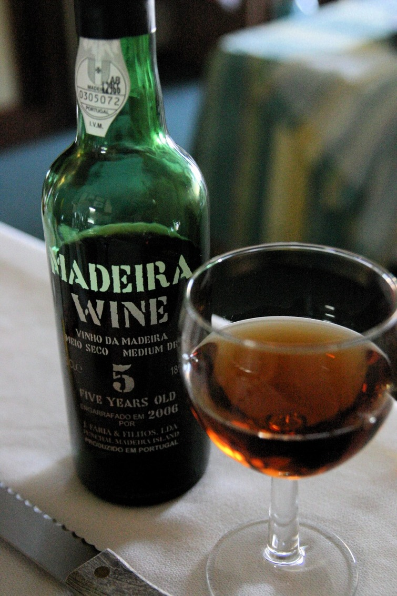
19) 킬릭이 거기 있었다. 그는 손에 커피 포트를 들고 고물쪽 창문 밖을 훔쳐다 보고 있었다. "좋은 아침일세, 킬릭." 스티븐이 말했다. "이 친구는 어디 있나 ?" "좋은 아침입니다. 킬릭이 말했다. "아직 갑판 위에 계세요." "킬릭," 스티븐이 물었다. "뭔가 문제인가 ? 빵 보관실에서 뭐 유령이라도 본 건가 ? 지금 아픈가 ? 혀 좀 내밀어 보게." 킬릭은 플란넬 천 같고 엄청나게 긴 그의 혀를 집어 넣은 뒤, 아직도 창백한 상태로 말했다. "빵 보관실에 유령이 있냐고요 ? 유령보다 더 나쁜 것이 있습니다. 그 비열한 쥐새끼들이 커피를 건드렸어요. 이 배에 커피가 한 포트 끓일 분량도 더 안 남은 것 같습니다." "프리저브드 킬릭, 그 포트 이리 건네 주게. 그러지 않으면 자네도 빵 보관실 유령이 되어 한맺힌 울음 소리를 내게 될 거야." 매우 주저하며 킬릭은 테이블 끄트머리에 커피 포트를 내려 놓으며 중얼거렸다. "아, 이제 경을 칠 거야, 경을 칠 거라고." 잭이 걸어들어와 스티븐에게 아침 인사를 하며 커피를 한잔 따르며 뭔가 말했다. "모두 뭐에 있다고 ?" "모든 프랑스 선박들은 항구에 들어있네. 두 동인도 상선과 빅토르 호와 함께 말일세. 갑판에 올라가 보지 않았나 ? 우린 지금 포르-루이(Port-Louis) 외곽에 떠 있다네. 근데 커피 맛이 좀 이상하군." "그건 아마 쥐똥 때문에 그럴 걸세. 쥐들이 우리 커피를 모조리 먹어 치웠어. 아마 지금 우리가 마시는 이 커피는 커피 자루 바닥에서 긁어낸 혼합물일 걸세." "어쩐지 좀 익숙한 맛이 나더라 했지." 잭이 말했다. "킬릭, 미스터 세이무어에게 내 안부를 전하면서 자네에게 보트를 한척 내달라고 하게. 우리 소함대를 돌아다니며 커피를 최소한 1스톤(약 6.3kg) 얻어오지 못한다면, 자네 돌아올 필요가 없네. 네레이드 호는 찾아가지마. 거기서는 커피를 안 마시더라고."
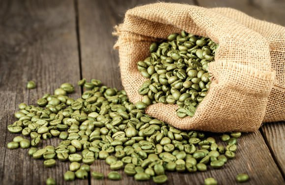
20) 그는 그래플러 호가 스티븐을 태우고 돌아올 때까지 그걸 몇번 해보았다. 스티븐은 첩보와 함께, 세상에서 가장 좋은 품질의 커피 한상자와 그를 로스팅할 새로운 기계를 가지고 돌아왔다. Desolation Island 21) "오브리 함장님," 그녀가 말했다. "베이컨이 식겠어요." "먼저 커피부터 한잔 할게." 그가 말했다. "그리고 나서는 세상의 베이컨을 다 먹어버리겠어. 오 이런 소피," 컵을 들지 않은 손으로 뚜껑을 들어올리며 말을 이었다. "여기 선원의 낙원(Fiddler's Green)이 있구먼 - 달걀, 베이컨, 찹스(chops), 훈제 청어, 간, 부드러운 빵... 아이 이빨은 좀 어떻소 ?" 이건 그의 아들 조지에 대해 물은 것이었다.
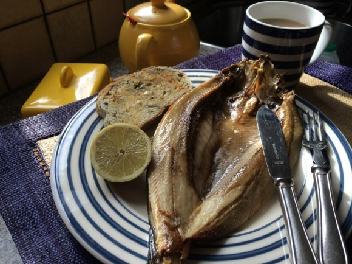
(북유럽 사람들은 아침 식사로 훈제 청어를 먹는 모양입니다 ? 그런 표현이 여기저기서 자주 나오네요 ?) 22) "이 커피는 데운 겁니다. 끓였지요(Boiled)." 그는 자주색이 나는 그의 커피를 들여다보며 말했다. 킬릭의 얼굴은 야비하고 초췌한 표정을 하고 있었는데 그 표정은 "다른 사람들이 고생고생하는 동안 이 인간들이 침상에 내내 누워있다면 제대로 된 대접을 받을텐데"라는 말을 하는 듯 했다. 하지만 사실은 그 커피는 끓인 것이었고 (brewed가 아니라 boiled), 그건 함장님의 일상에 있어 교수형에 그다지 멀지 않은 범죄 행위였다. 그래서 킬릭은 그저 비협조적으로 콧소리를 내며 "또 한 포트 곧 올라옵니다" 라고 말하는 것으로 만족했다. 23) "죄송합니다, 군의관님." 헤라패쓰가 꽤 일을 잘 해놓고도 말했다. "어제 밤에 잠을 제대로 못 자서 좀 멍하네요." "여기 자네를 되살릴 냄새가 있군 그래." 스티븐이 말했다. 배 전체가 커피 로스팅(roasting)하는 냄새로 가득했다. 실은 로스팅이라기보다는 시뻘겋게 달아오른 프라이팬에서 커피콩을 볶고(parching) 있는 것에 가까왔다.
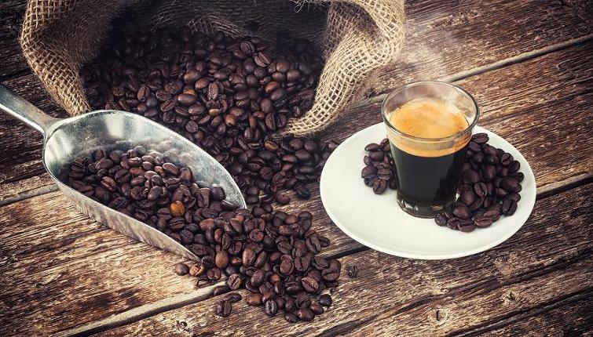
24) (잭 오브리가 미국 프리깃함의 포로가 됩니다.) 브로크가 말했다. "첫 아침식사는 당신이 준비되는 대로 드실 수 있습니다, 잭. 전 이미 먹었어요. 커피를 선호하시는 것을 아니까, 한 포트 준비해놓으라고 해놨습니다. 마음에 드시길 바랍니다." 마음에 들지 않았다. 필립의 급사는 마치 고양이처럼 신중했지만, 잭은 그의 모든 신중함이나 예의바름보다 킬릭의 커피 한 포트가 더 절실했다. 자바 호를 떠난 이후 한번도 제대로 된 커피 한 잔을 마셔보질 못했다. 미국인들은 친절하고 예의있고 손님 대접을 할 줄 아는데다 그 수병들도 매우 훌륭한 뱃사람이었지만 커피에 대해서는 매우 이상한 개념을 가지고 있었다. 커피가 너무 연해서, 절반 정도라도 정신을 좀 차리려면 부종이 생길 만큼 잔뜩 마셔야 할 지경이었다.
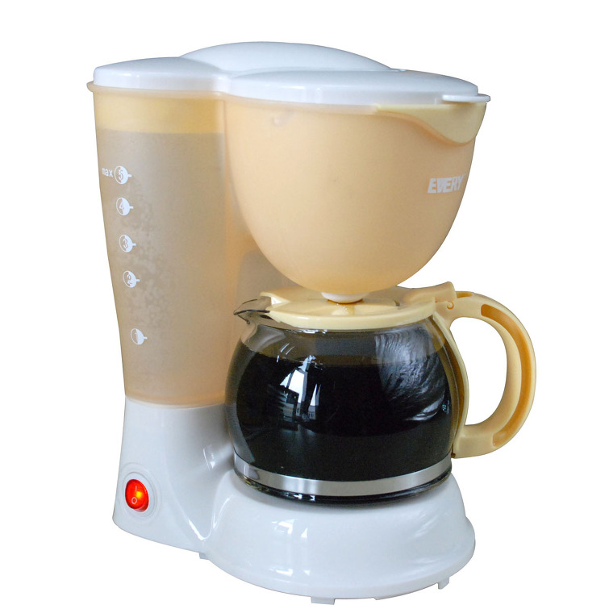
(저도 진한 믹스 커피만 마시다 처음으로 저런 커피 메이커로 내린 연한 원두 커피를 마셔 보고 깜짝 놀랐던 기억이 납니다. 아, 미국인들이 마시는 진짜 커피란 이렇게 연한 것이구나 라고요. 알고보니 이건 제대로 된 커피라고 할 수 없는 것이더군요.) The Surgeon's Mate 25) "그 여자가 그렇게 했을 게 확실해. 난 그 여자가 그걸 믿었다고 생각해." "신사분들께서는 아침 식사를 지금 드시겠어요 ?" 하녀가 문을 통해 소리를 질렀다. "그렇게 부탁하네," 스티븐이 말했다. "그리고 말이지, 커피를 평소보다 두배 진하게 해주면 고맙겠네. 그래주겠나 ?" "나도 그 여자가 그랬을 거라고 생각해." 그는 연한 커피를 한모금 마시며 말했다. 26) (잭과 머투어린이 야기엘로와 함께 프랑스 파리의 감옥에 갇힙니다. 간수는 그냥 감방에서 주는 식사를 들겠는가, 아니면 돈이 좀 있다면 외부 식당에 주문을 해서 먹겠느냐고 물으며 몇몇 식당을 소개해 줍니다.) "이 신사분은" 스티븐은 오브리 함장을 가리키며 말했다. "갓 낳은 달걀과, 죽과, 쌀 미음(rice-water)을 아주 신선하게 드셔야 한다네. 나는 뜨거운 커피를 들겠네." "문제 없습니다." 간수가 말했다. "여기서 100야드(90m)도 떨어지지 않은 곳에 있는 작은 식당을 알거든요. 마담 르이두는 하루 언제든 요리를 해주는데다 와인도 아주 고급으로 내놓지요." "그러면 그 과부댁으로 정하겠네. 이 신사분들에게는 신선한 우유와 평범한 빵을, 그리고 내게는 커피와 크롸상을 부탁하네. 특별히 진하게 끓여주면 좋겠군." (이미 정했는데도 간수인 루소는 계속 다른 비싼 식당 대신 르이두네 식당을 권하면서 한참을 떠벌입니다.) "그럼 마담 르이두 댁으로 주문을 보내지." 스티븐이 말했다. "우유와, 빵과, 커피와 크롸상일세., 그리고 커피는 진해야 한다고 꼭 좀 전해주게." 커피가 왔는데, 확실히 진했다. 뜨겁고, 진하고, 환상적으로 향기로왔다. 크롸상은 기름졌는데, 그렇다고 너무 기름지지도 않았다. 정말 맛있는 아침식사였다.
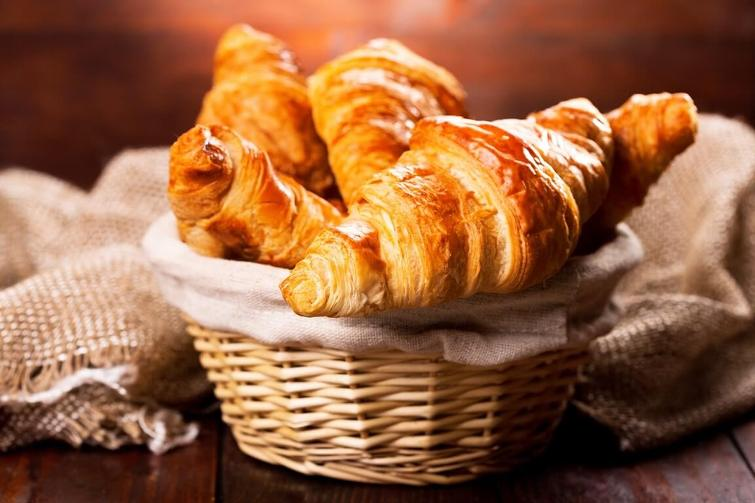
Treason's Harbour 27) (스티븐이 아픕니다.) "알았네, 고맙군." "자네 약하게 끓인 홍차와 부드럽게 삶은 달걀 들겠나 ?" "아닐세." 스티븐은 강한 의지를 담은 목소리로 말했다. "난 기독교인답게 진하게 끓인 커피 큰 것으로 한 포트, 그리고 훈제 청어를 좀 들겠네." 28) "미스터 필딩과 만나 이야기를 하면 기쁘겠네." 스티븐이 말했다. "미스터 필딩이 회복되면 그가 프랑스에서 어떻게 탈출했는지 이야기를 들어보고 싶네." 뜨겁고 진한 커피가 미스터 필딩을 꽤 빨리 회복시켜주었다. 두잔을 들이키더니, 그는 그의 코트를 향해 손을 뻗더니 주머니에서 한조각의 차가운 플럼-더프(plum-duff) 푸딩을 꺼내 즉석에서 먹어치웠다. "실례했습니다." 그가 말했다. "요 몇달간 너무 굶주렸더니 늘 주변에 먹을 것을 가지고 다니는 편입니다." The Far Side of the World 29) 그래서 그는 장교 식당의 요리사인 티베츠의 도움을 받을 형편이 아니었다. 킬릭의 천재성은 치즈 토스트와 커피 같은 아침 식사 요리 정도에서 그쳤기 때문에, 결국 그는 배 안에 이들 말고 또 요리를 할 줄 아는 사람이 또 있는지 찾아보는 수 밖에 없었다. 서프라이즈 호의 공식 주방장인 오레이지는 쾌락주의 학파에서는 거의 존재감이 없는 사람이었다. 사실 뭍사람 관점에서 보자면 오레이지는 요리사가 아니었다. 수병들을 위한 요리라는 것은 염장 쇠고기를 담수통에 담가 소금기를 뺀 뒤 거대한 구리 솥에서 삶는 것 외에는 없었고, 그나마 모든 자잘한 일들은 각 수병들의 식사조에서 당번으로 정해진 수병이 다 알아서 하게 되어 있었다.
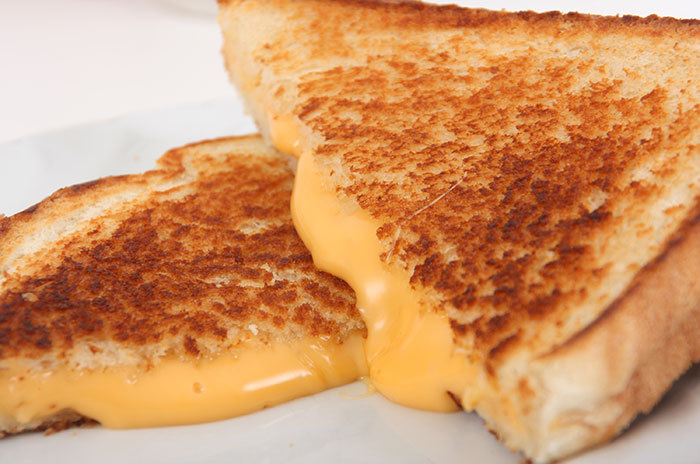
(잭 오브리가 군함에서 야식으로 자주 먹는 저 toasted cheese는 원래 저렇게 생긴 것이 아닙니다. 건빵 hardtack에 체다 치즈를 올린 뒤 토스티드 치즈를 굽는 전용 용기에 넣어 주방 화로 위에 올려서 굽는데, 전용 용기는 여러 개의 작은 칸으로 나뉘어 있는 것으로 묘사됩니다.) The Letter of Marque 30) 커피와 베이컨, 소시지와 토스트한 부드러운 빵이 풍기는 절묘한 조합의 냄새는 그를 세계 곳곳에서 깨운 바 있었다. 잭 오브리도 다른 뱃사람처럼 음식에 있어서는 매우 보수적인 편이라, 장기간 항해에서도 그는 암탉과 돼지, 젖짜는 염소, 그리고 푸른 커피 원두 자루를 싣고 다니며 (토스트를 제외하고는) 적도에서나 극지방에서나 같은 종류의 아침 식사를 하려고 노력했다. 그런 아침 식사는 머투어린이 보기에 문명 세계 건설에 잉글랜드가 가장 크게 기여한 것이었다. (역주 - 머투어린은 아일랜드 사람입니다.)
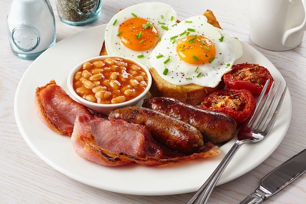
(먹어본 사람이든 안 먹어본 사람이든 다들 영국 요리 욕을 하지만, 그래도 영국식 아침식사는 누구도 욕을 하지 못합니다. 푸짐하고 맛있거든요 !)
** 목요일에 올리는 재탕글입니다. 2016년 4월에 썼던 글이군요.